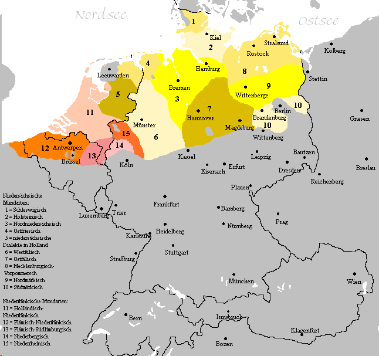
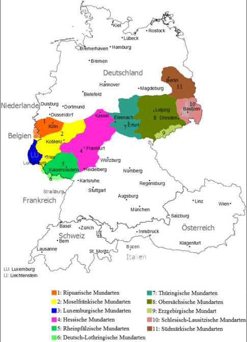
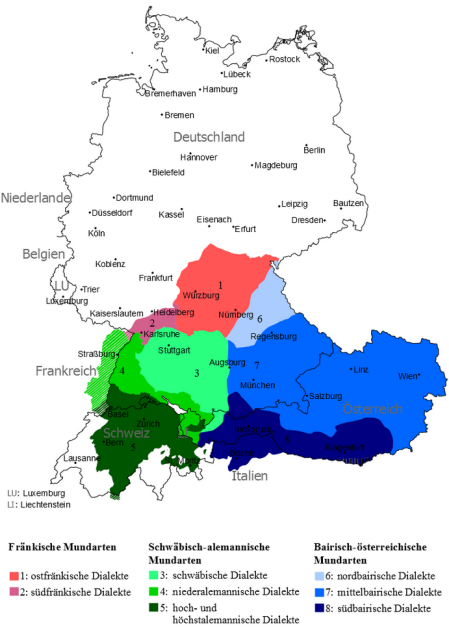

В германии 3 кластера диалектов немецкого языка.
Нижненемецкие диалекты (нем. Niederdeutsch):

Средненемецкие диалекты (нем. Mitteldeutsch):

Южнонемецкие диалекты (нем. Oberdeutsch):

Южнонемецкий кластер делится на 4 большие группы:
Алеманнский / Швейцарский диалект (западноюжнонемецкое (швабское) наречие). Распространён на юге Германии, на крайнем западе Австрии (Форарльберг), в Швейцарии, Лихтенштейне, в Эльзасе (Франция), а также в некоторых районах Италии.
Швабский диалект (нем. Schwäbisch) — диалект немецкого языка, распространённый в юго-восточной части Баден-Вюртемберга и на юго-западе Баварии (Баварской Швабии). В Австрии швабский диалект встречается частично в Тироле (Ройтте).
Баварский или баериш (нем. Bayerisch, нем. Bairisch, бав. Boarisch, старогерманское — Bairisch).
Франкский диалект (Fränkisch).